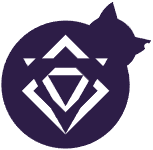

Guía de diseño y principios visuales de Katze para construir interfaces web, presentaciones ejecutivas y material gráfico con un mismo criterio técnico.
Cada componente vive en monocromo grafito y reserva el acento Katze para el foco real.

Cada superficie, línea divisoria y capa de elevación responde a reglas exactas para que cualquier pieza de Katze mantenga orden sin esfuerzo.
Explorar fundamentosDiseña una vez bajo la misma retícula de 8px y escala de márgenes para que la web, las presentaciones comerciales y los documentos PDF hablen el mismo idioma.
Bordes de 1px, radios consistentes de 6 a 12px y una sola declaración de elevación: borde o sombra, nunca tarjetas anidadas dentro de tarjetas.
Tokens base para mantener coherencia absoluta en interfaces, presentaciones y comunicación visual. Haz clic en cualquier tono para copiar su código HEX.
Katze es una firma de consultoría tecnológica, arquitectura DevOps e implementación oficial de Odoo (Odoo Ready Partner) enfocada en pequeñas y medianas empresas del sector productivo.
La empresa nació tras auditar un sistema monolítico inviable y rescatar a un cliente que ya había perdido casi $1.7M MXN en una implementación ERP fallida. Ese origen define todo lo que comunicamos: criterio honesto antes que promesas comerciales.
Referencia técnica para cualquier agente o modelo de IA que genere páginas web, presentaciones, piezas gráficas o diagramas para Katze. Incluye las skills empleadas para construir esta guía y las restricciones obligatorias de marca.
iso-kit.mjs)
Usada en FIG_01–FIG_04 para explicar conceptos como instrumentos físicos reales con sombreado en 4 tonos, orden de profundidad correcto y animación calma pausada fuera de pantalla.
.glb flotando sin contenedor; cuadros monocromo→luz sin card externa; hoja técnica continua de 5 columnas con líneas de 1px.